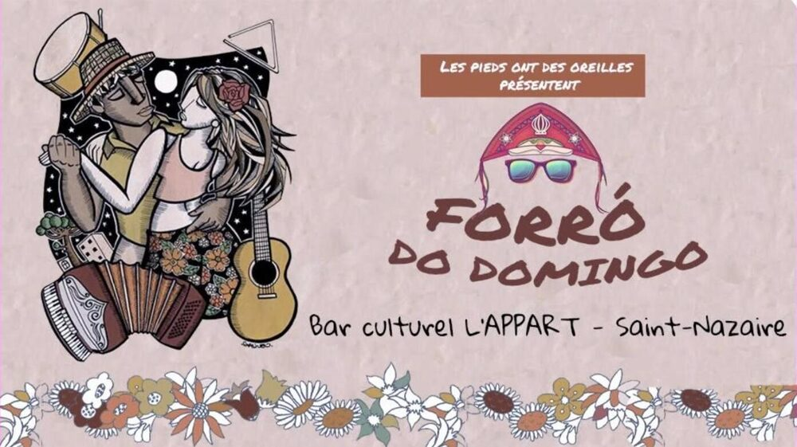

Forró de l'Appart

Lieu : L'Appart, Saint-Nazaire
Venez danser, découvrir, écouter le forró et terminer joyeusement le week-end ! Le forró est une musique et une danse du Nordeste brésilien, dansée traditionnellement à deux. De 18h à 20h30.